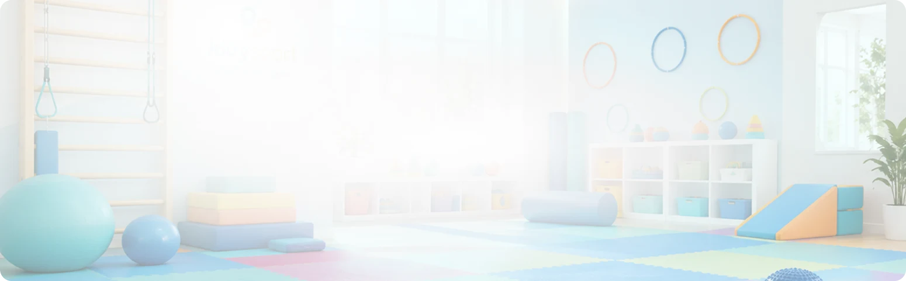
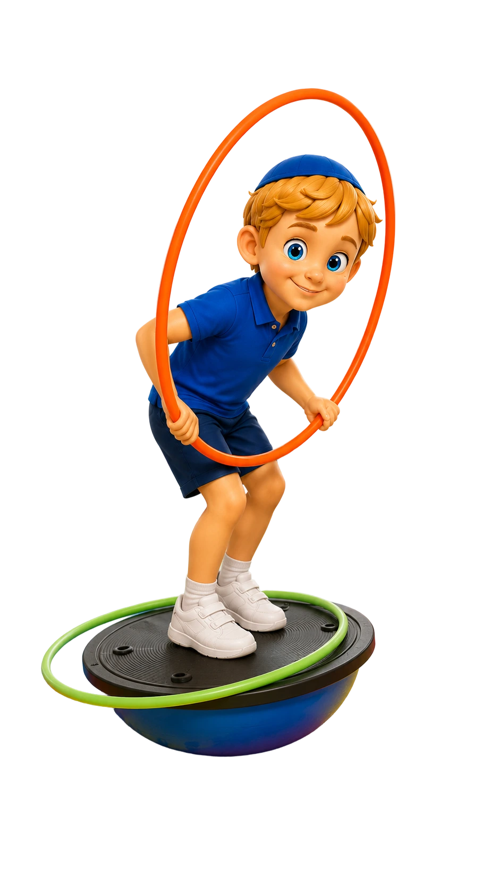

ריכזנו עבורכם את השאלות שאנחנו נשאלים הכי הרבה.
לא מצאתם תשובה? נשמח לדבר איתכם!
תהליך שמשתמש בתנועה, משחק ופעילות ספורטיבית כדי לקדם מטרות רגשיות, חברתיות, התנהגותיות ומוטוריות.
לכל ילד נבנית תוכנית משלו. המדריכה מתאימה עבורו מטרות ואתגרים אישיים בתוך הפעילות המשותפת.
עד שישה ילדים בקבוצה.
כל מפגש נמשך 45 דקות ומתקיים אחת לשבוע.
הקבוצה מאפשרת לתרגל בזמן אמת תקשורת, גבולות, המתנה לתור, שיתוף פעולה והתמודדות חברתית.
אותו משחק יכול לקדם מטרות שונות. ילד אחד עובד על קואורדינציה, אחר על ויסות רגשות ואחר על ביטחון חברתי.
בחוג רגיל המטרה המרכזית היא הפעילות הספורטיבית. אצלנו לכל פעילות יש גם מטרות טיפוליות אישיות ומעקב מקצועי.
מבחינת הילד זו פעילות מהנה עם משחקים, אתגרים וחברים. העבודה הטיפולית נמצאת בתכנון ובתיווך של הצוות.
במהלך החודש הראשון, לאחר שהצוות כבר התחיל להכיר את הילד בתוך הפעילות.
לא. ההיכרות עם הילד מתבצעת כחלק מהפעילות ומשיחת האינטייק. ניתן להעביר לצוות אבחונים קיימים.
התוכנית נבנית לפי המידע מההורים וההתבוננות בילד במהלך הפעילות.
הצוות מתעד את הפעילות, ובכל רבעון ההורים מקבלים דוח התקדמות ממוקד.
כן. כל המדריכות בעלות הסמכה בספורט טיפולי מטעם וינגייט ומקבלות הדרכה מקצועית שבועית.
קיימת אפשרות להשתתפות בהתאם לזכאות האישית ולתנאי קופת החולים.
לקידיספורט חמישה סניפים ברחבי בית שמש. רמה ג’ - עובדיה 7, רמה א’ - נחל שורק 15, רמה ב’ - לב הרמה - נהר הירדן 1, רמה ד’ - שדרות האמוראים 33
לאחר שיחת היכרות נבדקת התאמה לפי גיל הילד, הצרכים שלו, הסניף וזמינות הקבוצות.
בתחילת הדרך אנחנו בודקות כיצד הילד מגיב לפעילות ולקבוצה. במידת הצורך נבחן יחד את האפשרויות המתאימות להמשך.



נשמח לשמוע מכם ולענות באופן אישי.
דברו איתנו